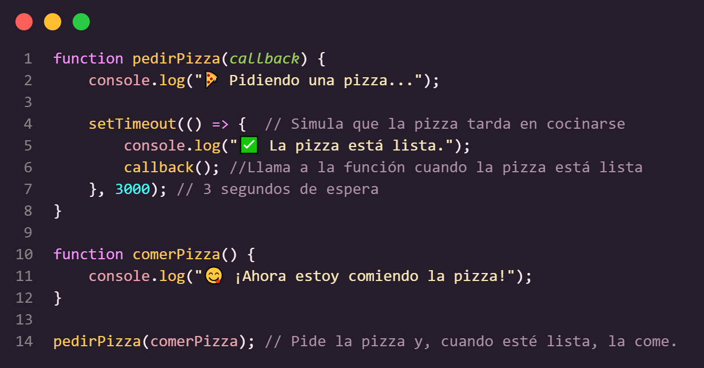

Historia de Javascript
JavaScript nació en 1995 de la mano de Brendan Eich, quien lo creó en solo 10 días mientras trabajaba en Netscape. Su objetivo era hacer que las páginas web fueran más interactivas, ya que en ese entonces solo mostraban texto e imágenes estáticas.
Al principio se llamó Mocha, luego LiveScript, y finalmente JavaScript para aprovechar la popularidad de Java (aunque no tienen nada que ver).
- 1996-1999: Microsoft lo copia y lo llama JScript. Esto crea caos porque cada navegador lo interpreta diferente.
- 1999-2009: Llega AJAX, permitiendo que las páginas se actualicen sin recargarse. Ahí nacen Gmail y Google Maps, revolucionando la web.
- 2009: Se lanza Node.js, permitiendo ejecutar JavaScript fuera del navegador. Ahora, con JS se puede crear servidores, apps móviles y hasta inteligencia artificial.
Sintaxis y Variables
JavaScript es un lenguaje de programación interpretado que se integra en un documento HTML mediante la etiqueta <script>, ubicada antes del cierre de </body>.
Se considera una buena practica finalizar las lineas con punto y coma ;
Variables y valores
Se declara/inicializa/crea una variable usando las palabras reservadas VAR LET o CONST y asignandole un nombre.
Variable: Espacio de memoria destinado a almacenar datos que se utilizaran en el programa. Un contenedor de informacion
Valores: Es lo que se asocia a las variables.
- LET: Fue introducido en ES6 (ECMAScript 2015) y es más moderno y flexible. Es el más recomendado para declarar variables que puedan cambiar su valor a lo largo del tiempo. Tiene un alcance (scope) local, lo que significa que solo es accesible dentro del bloque de codigo en el que se define. Si se intenta usar la variable ANTES DE SU DECLARACION, da error. Se usa cuando se necesite una variable cuyo valor puede VARIAR y reasignarse.


-
CONST: Al contrario de var y let, CONST no varía su valor, su valor es CONSTANTE. Cuando se ejecuta el programa el valor de la constante NO CAMBIA. Se puede modificar cuando el programa no se encuentra en ejecución. Esto no significa que el valor sea inmutable (por ejemplo, los objetos y arrays pueden cambiar), sino que la referencia a la variable no puede cambiar. Tiene un alcance (scope) local. Usar const para declarar variables que no deben cambiar.

Si se declara un objeto o array con const no se puede reasignar la referencia al objeto o array, pero sí se puede modificar sus propiedades o elementos

- VAR: Es la manera tradicional de declarar variables en JavaScript, pero no se recomienda debido a sus limitaciones y comportamiento a veces inesperado. Tiene un alcance (scope) de función (si se define dentro de una función SOLO ES ACCESIBLE DENTRO DE ESA FUNCION). Si se define fuera de cualquier funcion, sera global (incluso si se encuentra dentro de un bloque como un
ifofor). Si se usa una variable var antes de declararla NO da error, pero su valor seraundefinedhasta que se ejecute la asignacion.var es útil para mantener código legado o cuando se necesita compatibilidad con versiones antiguas de JavaScript.
Tipos de datos
String (Cadena de texto)

Number (Números enteros o decimales)

Boolean (Booleanos / valores verdaderos o falsos)

Undefined (Variable declarada sin valor asignado)
Null (Representa un valor "vacío" o "nulo")

Tipos de datos complejos
Objeto
Almacena clave: valor entre llaves { } y las propiedades se separan con coma ,

Array (Arreglos)
Tipo de objeto que almacena una LISTA DE VALORES entre corchetes [ ]

Funcion
Bloque de codigo que se puede reutilizar llamando por el nombre de la funcion

Date (Fecha)
Tipo de objeto para manejar fechas y horas
Condicionales
Estructura que permite la toma de decisiones en el codigo dependiendo de las condiciones.
Es como "darle instrucciones al codigo"
Estructura de un condicional:
- Condición
- Acción que se ejecuta si la condición se cumple.
- Acción que se ejecuta si la condición no se cumple.
Si <condicion> entonces <operacion>
El objetivo del control de flujos con condicionales es marcar puntos en nuestra aplicación donde, a partir de alguna evaluación, el programa pueda tomar varios caminos posibles de acción.
Básicamente es un algoritmo porque son fragmentos de código que se ejecutan dependiendo de los pasos a seguir en el programa.
Condicionales en JavaScript
- if (condición)
- if...else
- if...else if...else
- Operador ternario
(condición ? true : false)metodo abreviado de if...else para cuando solo hay dos posibles opciones - switch...case
Estructura IF
Ejecuta un bloque de código si la condición es verdadera. Se ejecuta solo si la condición es true.
Estructura IF...ELSE
Si la condición es falsa, ejecuta otro bloque de código. Evalúa dos caminos posibles.
Estructura IF...ELSE IF...ELSE
Múltiples condiciones secuenciales. Permite evaluar varias condiciones en orden.
Estructura SWITCH...CASE
Ideal para comparar una variable contra múltiples valores. Evita usar muchos if...else if cuando hay múltiples casos.
Operador Ternario
Una forma más corta de escribir if...else cuando solo hay dos opciones. til para asignar valores en una sola línea.
Bucles / Ciclos de repeticion
Se usan para ejecutar una acción varias veces sin necesidad de escribir el mismo código repetidamente.
Son útiles cuando se necesita recorrer listas, contar elementos, hacer cálculos repetitivos o esperar una condición para continuar.
Casos donde se utilizan los bucles
- Mostrar una lista de productos en un ecommerce
- Contar hasta cierto número (ejemplo: un temporizador o cronómetro)
- Recorrer una base de datos para buscar información
- Validar respuestas en un formulario hasta que sean correctas
Tipos de bucles
For
El bucle FOR se usa cuando SI SE SABE cuántas veces se repite (ejecuta) una accion
Ejemplo "Contar del 1 al 5"
Break
Se usa para SALIR DEL BUCLE antes de que termine su ejecución normal.
Continue
Se usa para SALTAR UNA ITERACION ESPECIFICA del bucle, pero SIN DETENER su ejecución completa.
While
El bucle WHILE se usa cuando NO SE SABE cuántas veces se se debe repetir (ejecuta) una accion
Se usa para repetir una acción HASTA que se cumpla una condición.
Ejemplo "Pedir una contraseña hasta que sea correcta"
Do...while EJECUTA MNIMO UNA VEZ
Ejecuta y luego sigue si la condición es verdadera.
Se usa cuando se necesita repetir al menos una vez HASTA QUE SE CUMPLA LA CONDICION.
For...of Recorrer ELEMENTOS de un ARRAY
Ejemplo "Mostrar producto por consola"
For...in Recorrer PROPIEDADES de un OBJETO
Funciones
Funciones y propiedades básicas
Función
BLOQUE de código que AGRUPA UN CONJUNTO DE INSTRUCCIONES EN UNA VARIABLE para realizar una tarea concreta.
Se puede pensar como una receta y los parámetros serían los ingredientes necesarios para realizarla.
Una vez que se defina la función puede ser llamada y reutilizada en el código.
Las funciones permiten la interacción con el usuario a través de eventos en HTML.
Evita la repeticion siguiendo los principios SOLID para que nuestro código sea más limpio, escalable y fácil de mantener.
-
S - Principio de Responsabilidad nica (SRP)
Cada función debe hacer solo una cosa y hacerla bien. Separar responsabilidades en funciones específicas.
-
O - Principio de Abierto/Cerrado (OCP)
El código debe estar abierto a extensiones, pero cerrado a modificaciones.
-
L - Principio de Sustitución de Liskov (LSP)
Los objetos hijos deben poder reemplazar a sus padres sin alterar el funcionamiento.
-
I - Principio de Segregación de Interfaces (ISP)
Evita funciones innecesarias en una misma clase o módulo.
-
D - Principio de Inversión de Dependencias (DIP)
Las funciones deben depender de abstracciones, no de implementaciones concretas.
Beneficios de las funciones
- Modularidad: Las funciones son bloques que permiten dividir un programa en pequeñas partes manejables y reutilizables.
- Legilibidad y organización: Facilitan la comprensión del código al estructurarlo en tareas concretas.
- Abstracción: Tecnica de programacion para enfocarse en detalles importantes y omitir los irrelevantes. Se usa para pnesar en un nivel superior y construir soluciones complejas a distintos problemas. Crear funciones REUTILIZABLES
Ejemplo: Control remoto: no se necesita saber como funciona, solo apretar los botones.
Función flecha
const funcionFlecha = (a,b) => a + b ;
- La flecha "señala" lo que se quiere hacer.
- Tiene un retorno implícito.
- Son una forma más corta y sencilla de escribir funciones en JavaScript.
- Se introdujeron en ES6 y son ideales para funciones cortas y expresivas.
Ventajas de las Funciones Flecha
- Más cortas y limpias
- No cambian el valor de this (Ideal para trabajar con objetos y setTimeout)
- Perfectas para callbacks y métodos de array como
map(), filter(), reduce()
Sintaxis
- Una función se declara a través de la palabra reservada
function. - Su nombre debe estar en minúscula y sin espacios.
- El contenido de la función se escribe entre las llaves { }
- Los nombres de las funciones no pueden repetirse.
" TODA VARIABLE VIVE Y MUERE SOLO DENTRO DE SU FUNCIN "
- un programador anónimo.

Parámetros
- Los parametros NO SON VARIABLES.
- Los parámetros se envían a la función mediante variables y se colocan entre los paréntesis de la función al llamarla.
- A diferencia de la variable que son un contenedor de información, los parámetros traen datos, lo procesan y lo almacenan dentro de una variable.
- Son un tipo de dato el cual espera recibir algo y lo utiliza en el momento para después descartarlo.
- Una función puede no tener datos para funcionar, pero a veces está la necesidad de recibir cierta información.
function funcionConParametros(parametro1, parametro2);
Return
Para poder utilizar una variable local en otra seccion del codigo, se utiliza return (retornar)
Usando return devuelve el resultado a la función
Scope
Variables Globales
- Se pueden usar en cualquier parte del código.
- Son útiles cuando necesitas usar el mismo dato en varias partes del código.
Variables Locales
- Solo se pueden usar dentro de un lugar específico (como dentro de una función).
- Ayudan a organizar el código y evitar errores.
- Tienen prioridad a la hora de ejecutarse.
Función Anónima
- Es una función que NO TIENE NOMBRE.
- Solo se usa en el momento y luego desaparece.
- Es como si alguien hiciera un trabajo, pero no lo firmara.
- Permiten almacenar lo deseado dentro de una variable.
- Normalmente se usan porque se puede almacenar el valor a una variable y utilizarla posteriormente en el código.
- tiles cuando la función es temporal y solo se usa en una ocasión específica.
¿Para qué usar funciones anónimas?
-
Como parámetros de otras funciones como
setTimeout, map(), etc. - Funciones rápidas y temporales que solo se usan en el momento.
Callback
- Función que se pasa como argumento a otra función y se ejecuta después de que la otra función termine su tarea.
- Es una forma de "decirle a JavaScript que ejecute algo después de que haya hecho algo más.
- El callback se ejecuta después de una acción que se haya completado.
Ejemplo pizzería
- Los callbacks en JavaScript se usan para manejar operaciones asincrónicas, como obtener datos de un servidor, sin detener el flujo del programa. Esto permite que el código siga ejecutándose mientras espera una respuesta.